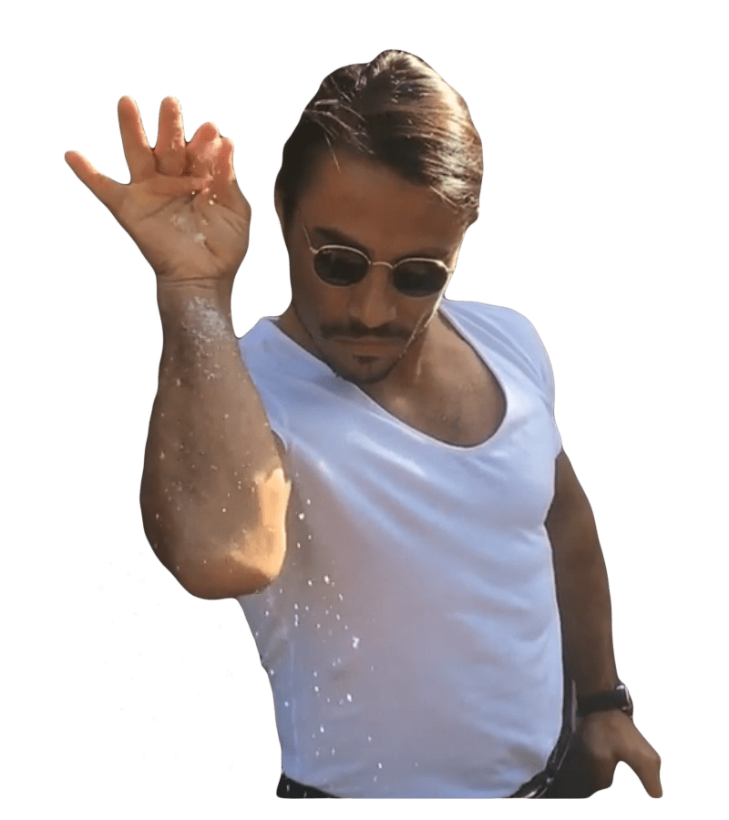

About
Saltiest
Hacker Troll
We take saltiness seriously! Using the Saltiest Hacker Troll app will provide you with entertainment ...or tilt depending on how you want to look at it. Our site gathers comments and allows users to rate them based on how salty or trolly they are. It also allows users to mark their favorite comments and store them in their personal gallery.
Is your day too bland or missing flavor? We can sprinkle some salt on it!